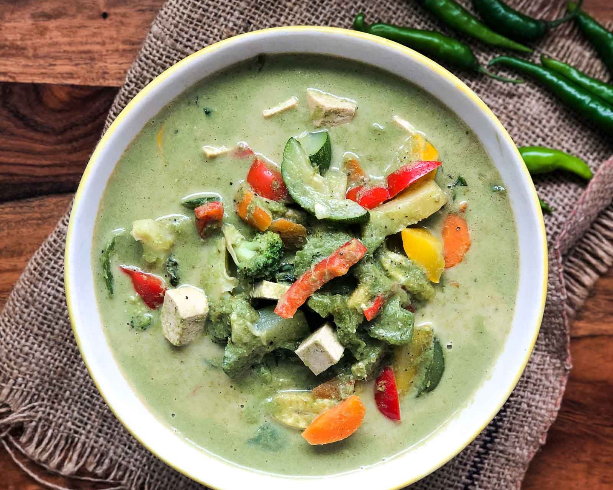

Cooker's Kitchen

Thai Green Curry with Vegetables
Ingredients:
- 1 tablespoon coconut oil
- 1 medium onion, chopped
- 3 cloves of garlic, minced
- 1 can of coconut milk
- 2 tablespoons green curry paste
- 2 cups mixed vegetables (such as carrots, bell peppers, zucchini, and eggplant), chopped
- 1 cup vegetable broth
- 2 tablespoons fish sauce
- 1 tablespoon palm sugar
- Salt and black pepper to taste
- Fresh basil leaves, for garnish
Instructions:
- In a large saucepan, heat the coconut oil over medium heat. Add the chopped onion and cook until softened, about 5 minutes.
- Add the minced garlic and cook for another minute, until fragrant.
- Stir in the coconut milk and green curry paste. Bring to a boil, then reduce heat and simmer for 5 minutes.
- Add the mixed vegetables and cook until just tender, about 5 minutes.
- Stir in the vegetable broth, fish sauce, palm sugar, salt, and black pepper. Simmer for 10 minutes.
- Serve the Thai Green Curry with Vegetables hot, garnished with fresh basil leaves.